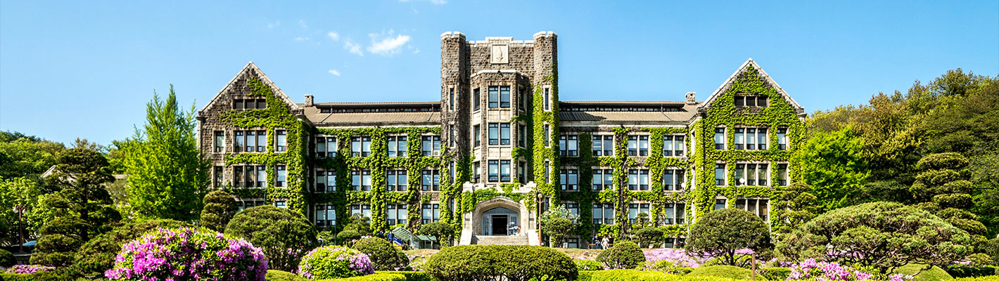
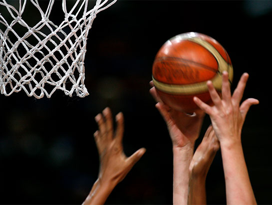
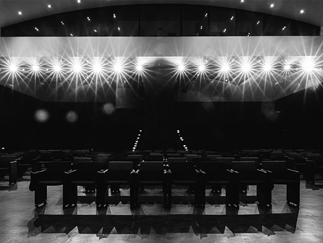
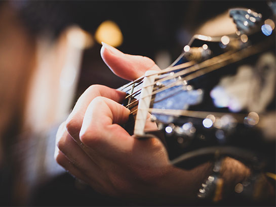
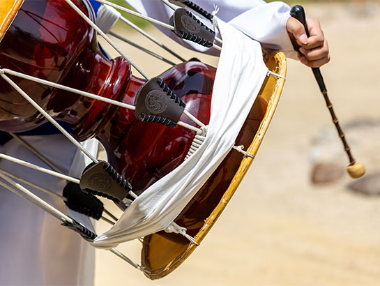

<?

$mainTitle="대학소개";
$subTitle="학생회 및 동아리";
$subIdx=1;

?>

<? include("../include/sub-header.html") ?>

<div class="club">
  <div class="container">
    
    <div class="club-intro-box">
      <h4>이과대학 학생회</h4>
      <div class="club-intro-contents">
        <p>
          연세대학교 제58대 이과대학 학생회 <span>“우리의 힘으로 만드는 새로운 변화, NewTurn”</span>입니다! <br />
          저희는 다음과 같은 이과대학 공동체를 꿈꿉니다.
        </p>
        <ul>
          <li><span>01</span> 다양한 행사와 함께 하는 신나는 대면 학기</li>
          <li><span>02</span> “수물화지천대” 우리 모두 이학인</li>
          <li><span>03</span> 이학인의 일상과 함께하는 학생회</li>
          <li><span>04</span> 이학인의 편의를 위해 힘쓰는 학생회</li>
        </ul>
        <p class="contact">
          NewTurn 은 여러분과 함께 이과대학에 새로운 변화를 만들어가겠습니다. 궁금하신 점이 있다면 언제든지 02-2123-3649(이과대학 학생회실 번호) 또는 @yonseiehak_newturn(이과대학 학생회 인스타)으로
          연락주시기 바랍니다.
        </p>
      </div>
    </div>
    <div class="club-info-box">
      <h4>이과대학 동아리</h4>
      <div class="club-info-txt">
        <div class="club1">
          
          <p>
            <span>가이아</span>
            가이아는 밴드의 구성을 기본으로 한 음악, 특히 락과 메탈 등을 좋아하는 사람들로 이루어진 이과대/생명시스템대 연합 락밴드로써 각종 공연, 행사 등에서의 참가를 목적으로 하고 있습니다. 이외의
            각종 연합 공연이나 동아리 정기 공연을 통해 선후배간의 교류와 친목을 도모하고 있습니다.
          </p>
        </div>
        <div class="club2">
          <p>
            <span>공사랑</span>
            안녕하세요! 이과대 농구동아리 공사랑입니다. '공사랑'은 30년이 넘은 전통을 가진 이과대학 농구동아리로 매주 학교에서 농구연습을 하며, 매 학기 OB/YB행사, MT 등 다양한 행사를 진행하고
            있습니다. 학과, 학번, 나이, 실력에 상관없이 농구를 좋아하시는 분들 환영합니다!
          </p>
          
        </div>
        <div class="club3">
          
          <p>
            <span>이학편집위원회</span>
            연세대학교 이과대학 동아리 「이학」 교지편집위원회는 이과대학 유일의 언론기관이자 교지편집부입니다. 1962년부터 매년 교지를 출간해 온 이학은 이학인들의 눈을 통해 바라본 세상을 글에 담아내고
            있습니다.
          </p>
        </div>
        <div class="club4">
          <p>
            <span>이연극회</span>
            30년 역사의 이과대 유일한 연극 동아리! 개성 있는 사람들이 함께 모여 매력적인 무대를 만들어갑니다. 함께 관극을 가거나, 직접 극을 제작해서 올리는 가을 정기 연극이 주된 활동이며, 정기적으로
            모여 극에 대해 논하거나 졸업하신 선배님들을 초청하는 ‘이연의 밤’ 등의 이벤트도 진행하고 있습니다.
          </p>
          
        </div>
        <div class="club5">
          
          <p>
            <span>청년</span>
            청춘을 연주하다! <br />
            청년은 이과대학 X 생명대학에 소속된 연합 밴드 동아리입니다. 어쿠스틱 음악을 추구하며, 부원들 간의 화목한 분위기를 중시하는 단체입니다. 아래의 링크에서, 비대면 전환 시기에도 꾸준히 활동을
            이어온 청년을 만나보세요!
          </p>
        </div>
        <div class="club6">
          <p>
            <span>한얼</span>
            이과대학 풍물동아리 한얼입니다. 한얼은 1985년부터 시작한 전통있는 동아리로 풍물에 관심 있으시면 누구든 환영합니다. 저희 풍물패는 전라도 익산에서 전수를 받고 이리농악을 하는 동아리입니다.
            주요 활동들은 다음과 같습니다. 매 분기마다 대동제, 연고전, 지신밟기활동이 있습니다. 방학이면 이리농악 전수, 농활, 공동전수 (주로 고창 or 대부도) 활동 등 선배들과, 연세대학교 다른 단과대
            학우들과, 고려대학교, 서대문구 연합 동아리들과 함께하는 활동에 자율적으로 참여할 수 있습니다. 큰 공연으로는 가을에 무악 극장에서 공연이 이루어지고 새터 공연도 합니다. 북, 장구, 꽹과리 등의
            전통 악기를 다루거나 농악에 관심이 있다면 많은 지원 바랍니다.
          </p>
          
        </div>
      </div>
    </div>
  </div>
</div>

<? include("../include/footer.html") ?>
